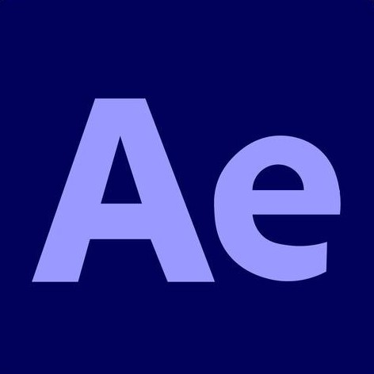

1.png)
-
Role
Character Design
Mascot Design
Character Animation - Project Span 1 Month
-
Softwares


- Target Medium Brand Mascots
Background
Table tennis in Indonesia struggles to connect with younger audiences. Sanwei Indonesia needed a fresh, relatable face for their brand, one that speaks the language of youth, lives on social media, and makes the sport feel exciting and worth picking up.
Design Objective
To design a duo of teen mascots (male & female) that represent Sanwei Indonesia's competitive spirit, attract younger audiences to table tennis, and serve as an engaging brand presence across social media and campaigns.
Study Case

According to Populix, badminton leads Indonesia's sports interest at 96% while table tennis sits at only 9%. This gap is exactly why Sanwei Indonesia needed fresh, digital-native mascots that could reposition table tennis as a whole community in Indonesia.
Moodboard
 1.png)
The moodboard is built around Sanwei's existing brand identity, pulling from its visual energy and direction to ensure every new design feels like a natural extension of the brand rather than something disconnected from it.
Exploration


The exploration phase focuses on finding the right shape and energy for both characters, their interactions, and expressions that capture the competitive yet fun spirit of a real table tennis player.
Character Design
Sanhao (三好)
 1.png)
Weiming (薇明)
 1.png)


The boy and girl are built to complement each other as a duo while each holding their own distinct visual identity. Table tennis gear and outfits ground them in the sport, and Sanwei's logo and products are integrated naturally into the design without feeling forced.
Both characters are designed to feel like a natural duo while staying visually distinct from each other. Their outfits and gear reflect an authentic table tennis player look, and Sanwei's logo and products are integrated naturally into the design without feeling forced.
Animation


Both characters are brought to life through animation, adding movement and expression that make Sanhao and Wanming feel more dynamic and engaging for their audience.
Implementation Idea


This is one implementation of how both characters interact with their audience in the digital platform. In this case, Sanhao and Wanming promote the brand new Sanwei racket, presenting its specifications and specialty through their own dynamic personalities.